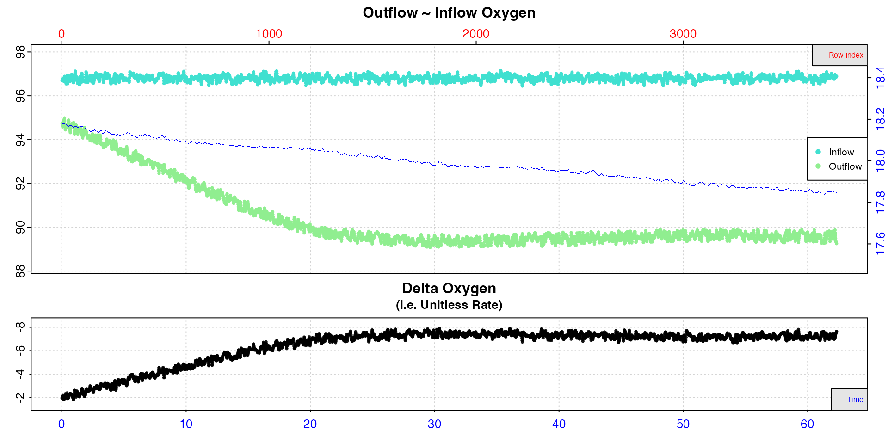

Introduction
Flowthrough respirometry differs from other methods in that rates of oxygen change are measured from a controlled, continuous flow of water through a respirometer rather than a known volume, typically after the system has achieved equilibrium. In this method, two oxygen concentrations are needed: ‘downstream’ and ‘upstream’ of the experimental chamber, or the outflow and inflow concentrations. These are used to calculate an oxygen delta (outflow minus inflow values), and this is used with the flow rate to calculate oxygen consumption or production rates.
An outflow recording or value, or already determined delta oxygen
values are required to calculate the rate. The inflow concentration is
typically a simultaneous recording, but an alternative is to use a known
value from a source of constant oxygen concentration such as fully
air-saturated water, or water from a header tank of controlled oxygen
concentration, and so often is not continuously monitored.
respR will accept any combination of available data to
allow rates to be calculated.
respR contains a workflow to process flowthrough
respirometry data comprising five functions:
-
inspect.ft- check and visualise the data and calculate the oxygen delta (if you haven’t already) -
calc_rate.ft- calculate a rate from a region (or several) of the data -
adjust_rate.ft- adjust the rate for background activity -
convert_rate.ft- convert the rate to specific units, including mass- or area-specific -
select_rate.ft- filter rate results according to various criteria
Not all of these are necessary depending on the analysis. See examples below.
Exploring flowthrough respirometry data
Typically the first step in data analysis is inspecting and visualising the data.
The inspect.ft function can be used to quickly examine
and visualise outflow and inflow data from a single chamber, but also a
large multi-column dataset. Using it with no inputs will inspect and
plot every column, assuming time is in column 1 and all
others are delta oxygen data (delta.oxy). Even if your data
is not delta oxygen values, you can use this without saving the result
for a quick look at the data. Note, if you do not tell it otherwise, the
function assumes data are delta oxygen and plots them on a reverse
y-axis. However, we can use the rate.rev input to override
this
inspect.ft(flowthrough_mult.rd, rate.rev = FALSE)
#> inspect.ft: Applying column default of 'time = 1'
#> inspect.ft: Applying column default of all non-time column(s) as 'delta.oxy'
#> Warning: inspect.ft: Time values are not evenly-spaced (numerically).
#> inspect.ft: Data issues detected. For more information use print().
#>
#> # print.inspect.ft # --------------------
#> num.time oxy.out.1 oxy.out.2 oxy.out.3 oxy.out.blank oxy.in.1 oxy.in.2 oxy.in.3 oxy.in.blank oxy.delta.1 oxy.delta.2 oxy.delta.3 oxy.delta.blank oxy.header temperature
#> numeric pass pass pass pass pass pass pass pass pass pass pass pass pass pass pass
#> Inf/-Inf pass pass pass pass pass pass pass pass pass pass pass pass pass pass pass
#> NA/NaN pass pass pass pass pass pass pass pass pass pass pass pass pass pass pass
#> sequential pass - - - - - - - - - - - - - -
#> duplicated pass - - - - - - - - - - - - - -
#> evenly-spaced WARN - - - - - - - - - - - - - -
#>
#> Uneven Time data locations (first 20 shown) in column: num.time
#> [1] 1 2 3 4 5 6 7 8 9 10 11 12 13 14 15 16 17 18 19 20
#> Minimum and Maximum intervals in uneven Time data:
#> [1] 0.01 0.02
#> -----------------------------------------The result does not have to be saved. This functionality can be used simply to get a quick overview of a dataset, check there are no common issues, and make sure the columns contain the data we expect. Column 1 contains the time data. Here, we can see columns 2 to 4 contain declining oxygen, and so as expected are the outflow oxygen data. There is also outflow oxygen from a control experiment which does not appear to decline very much (column 5). We can see there are no anomalies in the inflow oxygen data (columns 6 to 9) that might affect calculated rates. We can quickly see the existing delta oxygen columns (10,11,12) have, when the experiment has reached equilibrium, consistent values (around -8), and that the background delta (column 13) is also consistent. There is also a column of oxygen recorded in a shared header tank (column 14), and one of temperature (column 15).
Note, if multiple columns are inspected like this, and the object
saved, subsequent functions such as calc_rate.ft will use
only the first column of delta oxygen data for analysis. Best practice
is to inspect each experimental dataset or group of columns
individually. See later examples.
Case Studies
respR contains several example flowthrough datasets:
flowthrough.rd, flowthrough_mult.rd,
flowthrough_sim.rd.
We will use these here to run through some specific use cases and example analyses of flowthrough respirometry that should cover most user needs. If there are any not covered please get in touch and we will attempt to accommodate them.
Case 1: Outflow oxygen only
“We only have an outflow oxygen recording, but we know the concentration of the inflowing water does not vary much, because it was from an aerated, constant temperature and salinity header tank that we tested to be 100% air saturated frequently. We also know from pilot trials background is negligible, so we don’t need to perform an adjustment.”
Here, we will inspect the data, calculate a rate from a stable, consistent region, and convert it to units
Example data
The data flowthrough.rd contains measurements of oxygen
consumption in a species of chiton, (Mopalia lignosa). Detailed
information about the data, can be obtained with the command
?flowthrough.rd.
head(flowthrough.rd, n = 4)
#> time oxy.out oxy.in oxy.delta
#> <int> <num> <num> <num>
#> 1: 0 8.17 8.88 -0.710
#> 2: 1 8.17 8.88 -0.714
#> 3: 2 8.17 8.90 -0.731
#> 4: 3 8.17 8.88 -0.710We can see this dataset contains time values (secs),
both outflow and inflow oxygen concentrations (mg/L), and
an oxygen delta, which is simply the difference between outflow and
inflow. We will ignore these last two columns here.
Determine inflow oxygen
Knowing the temperature and salinity of the header tank allows us to calculate the saturated concentration (strictly speaking atmospheric pressure is also required, but we will use the default value). Obviously, we want the same oxygen units as the outflow recording.
convert_DO(100, from = "%Air", to = "mg/L",
t = 12, S = 30)
#> convert_DO: Input or output units require Atmospheric Pressure input (i.e. P = ??).
#> Default value of P = 1.013253 bar has been used.
#> [1] 8.92Therefore we know the theoretical concentration of the header tank in these conditions and this can be used as an inflow oxygen value.
Inspect data
The concentration of the header tank can be entered as the
in.oxy.value in inspect.ft, which will allow
it to calculate an oxygen delta. We use time and
out.oxy to specify the respective columns.
# inspect
insp1 <- inspect.ft(flowthrough.rd, time = 1, out.oxy = 2, in.oxy.value = 8.92)#>
#> # print.inspect.ft # --------------------
#> time oxy.out
#> numeric pass pass
#> Inf/-Inf pass pass
#> NA/NaN pass pass
#> sequential pass -
#> duplicated pass -
#> evenly-spaced pass -
#>
#> -----------------------------------------
The data checks show us there are no structural issues with the data, such as missing values or gaps. The top plot shows outflow and the entered, constant inflow oxygen against both time (bottom axis) and row index (top axis), which are the same here because data are recorded every second. The bottom plot shows the calculated delta oxygen values, which is a proxy for the rate. In these plots, consistent oxygen uptake or production rates will be represented by level or flat regions. Here there is some fluctuation towards the end of the data, but the first 400 rows look to have stable rates.
To help with choosing regions of the data from which to calculate
rates, you can pass the width input in the main function
call or when plotting the output object. This should be a value between
0 and 1 representing a proportion of the total data length, and smooths
the delta oxygen values by performing a rolling mean.
# inspect
plot(insp1, width = 0.05)This is a visual aid and only affects plotted values. It does not alter the delta oxygen values in the output.
Calculate rate
Calculating a rate requires the flowrate of water
through the respirometer in a volume (ul, ml,
or L) per unit time (sec, min,
hr, or day). Here, only the value is required;
the actual units will be entered in a later conversion function. For
this dataset experimental data are in ?flowthrough.rd, and
in this example the flowrate is 2.34 mL/min. (Yes, this
flowrate is extremely low! It was controlled with a peristaltic pump,
and gives you an idea of what it takes to get a viable rate via
flowthrough respirometry from a small coldwater mollusc!).
# calculate rate
rate1 <- calc_rate.ft(insp1, from = 1, to = 400, by = "row", flowrate = 2.34)#>
#> # print.calc_rate.ft # ------------------
#> Rank 1 of 1 rates:
#> Rate: -1.74
#>
#> To see full results use summary().
#> -----------------------------------------calc_rate.ft calculates the rate by averaging all delta
oxygen values within the chosen data region, and multiplying this by the
flowrate. The bottom plot shows this region in close-up. Note, the
dashed line is only there to illustrate the trend.
Convert rate
New we take the unitless rate from calc_rate.ft and
convert it to output units. This can be an absolute rate, that is of the
whole animal or chamber, or a mass- or area-specific rate if either of
these are entered. Here we will calculate both the absolute and
mass-specific rate of this chiton.
Here we need to tell the function the units of oxygen of the original
data and of the flowrate, as well as the mass of the specimen in
kg. Lastly, we specify the output units.
# absolute rate
rate1_abs <- convert_rate.ft(rate1,
oxy.unit = "mg/L",
flowrate.unit = "ml/min",
output.unit = "mg/h")
# mass-specific rate
rate1_ms <- convert_rate.ft(rate1,
oxy.unit = "mg/L",
flowrate.unit = "ml/min",
mass = 0.000070, # mass must always be in kg
output.unit = "mg/h/g") #> ########### Absolute rate ##########
#>
#> # print.convert_rate.ft # ---------------
#> Rank 1 of 1 result(s)
#> Input:
#> [1] -1.74
#> [1] "mg/L" "mL/min"
#> Converted:
#> [1] -0.105
#> [1] "mgO2/hr"
#>
#> To see full results use summary().
#> -----------------------------------------
#>
#> ######## Mass-specific rate ########
#>
#> # print.convert_rate.ft # ---------------
#> Rank 1 of 1 result(s)
#> Input:
#> [1] -1.74
#> [1] "mg/L" "mL/min"
#> Converted:
#> [1] -1.49
#> [1] "mgO2/hr/g"
#>
#> To see full results use summary().
#> -----------------------------------------Rates can easily be extracted from the output using
$rate.output.
rate1_final <- rate1_ms$rate.output
print(rate1_final)
#> [1] -1.49Or you can use summary and export = TRUE to
save the summary table as a new data frame which contains all rate
regression parameters and data locations, adjustments (if applied),
units, and more. This is a great way of exporting all the relevant data
for your final results.
rate1_final <- summary(rate1_ms, export = TRUE)
rate1_final
#> rep rank intercept_b0 slope_b1 rsq row endrow time endtime oxy endoxy delta_mean flowrate rate adjustment rate.adjusted rate.input oxy.unit flowrate.unit mass area S t P rate.abs rate.m.spec rate.a.spec output.unit rate.output
#> <lgcl> <int> <num> <num> <num> <int> <int> <int> <int> <num> <num> <num> <num> <num> <lgcl> <lgcl> <num> <char> <char> <num> <lgcl> <lgcl> <lgcl> <num> <num> <num> <lgcl> <char> <num>
#> 1: NA 1 -0.742 -0.0000123 0.079 1 400 0 399 -0.75 -0.741 -0.745 2.34 -1.74 NA NA -1.74 mg/L mL/min 0.00007 NA NA NA 1.01 -0.105 -1.49 NA mgO2/hr/g -1.49Case 2: Outflow and inflow oxygen
“We have both outflow and inflow oxygen recordings. We also know from pilot trials background is negligible, so we don’t need to perform an adjustment.”
This is a very similar analysis to Case 1 above,
but we will use the inflow oxygen recording as the in.oxy
input. The process is otherwise the same: inspect.ft,
calc_rate.ft, and convert_rate.ft.
Inspect data
# inspect
insp2 <- inspect.ft(flowthrough.rd, time = 1, out.oxy = 2, in.oxy = 3)#>
#> # print.inspect.ft # --------------------
#> time oxy.out oxy.in
#> numeric pass pass pass
#> Inf/-Inf pass pass pass
#> NA/NaN pass pass pass
#> sequential pass - -
#> duplicated pass - -
#> evenly-spaced pass - -
#>
#> -----------------------------------------Compared to the inspect.ft plot in Case 1 the delta oxygen values are less variable,
which suggests that at least some of the variation observed in the
previous example is explained by variation in inflowing oxygen levels.
This means that in this example delta oxygen are more consistent, so we
will use the entire dataset to calculate the rate.
Calculate rate
Since we are happy the rate is consistent across the whole datatset,
running calc_rate.ft using the default values will
calculate rate as the average of every delta oxygen value multiplied by
the flowrate.
# calculate rate
rate2 <- calc_rate.ft(insp2, flowrate = 2.34)#>
#> # print.calc_rate.ft # ------------------
#> Rank 1 of 1 rates:
#> Rate: -1.65
#>
#> To see full results use summary().
#> -----------------------------------------The slightly lower rate value we get here than in Case 1 (1.65 vs 1.74) suggests the header tank supply is not quite at the theoretical maximum air saturation that we calculated in Case 1, and demonstrates that it is always a good idea to have a recording of the inflow water or shared water source if it is practical to do so.
Convert rate
We will convert to only the mass-specific rate this time.
# mass-specific rate
rate2_ms <- convert_rate.ft(rate2,
oxy.unit = "mg/L",
flowrate.unit = "ml/min",
mass = 0.000070,
output.unit = "mg/h/g") #>
#> # print.convert_rate.ft # ---------------
#> Rank 1 of 1 result(s)
#> Input:
#> [1] -1.65
#> [1] "mg/L" "mL/min"
#> Converted:
#> [1] -1.42
#> [1] "mgO2/hr/g"
#>
#> To see full results use summary().
#> -----------------------------------------Case 3: Outflow and inflow oxygen plus control
“We have both outflow and inflow oxygen recordings. We have also have a concurrent recording from a blank control chamber that we want to use to adjust the specimen rates.”
The flowthrough_mult.rd dataset contains several columns
of data from a flowthrough experiment using three specimen chambers and
one control chamber: paired columns of outflow (cols 2,3,4,5)
and inflow (cols 6,7,8,9) oxygen recordings, delta oxygen columns (cols
10,11,12,13) calculated from these paired columns, and a recording from
a shared header tank (col 14). Other experimental parameters can be seen
with ?flowthrough_mult.rd. The units of time are minutes,
and of oxygen percent air saturation (%Air). We will
convert to actual units of oxygen concentration when we convert the
rate.
Inspect data
We will use inspect.ft to examine the first specimen
column pair of outflow and inflow oxygen.
# inspect
insp3 <- inspect.ft(flowthrough_mult.rd, time = 1, out.oxy = 2, in.oxy = 6)#> Warning: inspect.ft: Time values are not evenly-spaced (numerically).
#> inspect.ft: Data issues detected. For more information use print().Here we see a warning about not evenly-spaced time values. This comes
from this dataset using decimalised minutes as the time values and can
be safely ignored (the full print() command provides more
details).
This data is typical of flowthrough experiments, in that it takes some time before the experiment stabilises, that is the specimen’s respiration rate reaches equilibrium with the supply of oxygen. Here this occurs after around 25 minutes, so we don’t want to use any data before this. Rates after this are very stable however.
Calculate rate
No inputs for to and by means the function
will calculate the rate from the from input to the end of
the dataset in the default units of "time".
# calculate rate
rate3 <- calc_rate.ft(insp3, from = 30, flowrate = 0.1)#>
#> # print.calc_rate.ft # ------------------
#> Rank 1 of 1 rates:
#> Rate: -0.749
#>
#> To see full results use summary().
#> -----------------------------------------Calculate background rate
The fourth column pair contains outflow and inflow oxygen from a
blank control chamber that we will use to determine the contribution of
microbial respiration to the oxygen used, with the assumption that this
is the same in the specimen chambers. Note, it is important that
background experiments are conducted with the same equipment, under the
same conditions, and using the same flowrate as specimen experiments,
and data are in the same units. They do not necessarily have to be run
concurrently; respR allows you to save a background rate to
adjust multiple different experiments.
# inspect
bg <- inspect.ft(flowthrough_mult.rd, time = 1, out.oxy = 5, in.oxy = 9)Here we see there is a slight but noticeable difference in outflow and inflow oxygen due to microbial action. Moreover, it appears to be constant, so we can use the entire dataset to calculate a background rate.
We use the same calc_rate.ft function to calculate and
save background rates.
# calculate rate
bgrate <- calc_rate.ft(bg, flowrate = 0.1)#>
#> # print.calc_rate.ft # ------------------
#> Rank 1 of 1 rates:
#> Rate: -0.0317
#>
#> To see full results use summary().
#> -----------------------------------------Adjust rate
Now we use the saved background rate object to adjust the specimen rate we determined earlier.
# adjust rate
rate3adj <- adjust_rate.ft(rate3, by = bgrate)#>
#> # print.adjust_rate.ft # ----------------
#> NOTE: Consider the sign of the adjustment value when adjusting the rate.
#>
#> Rank 1 of 1 adjusted rate(s):
#> Rate : -0.749
#> Adjustment : -0.0317
#> Adjusted Rate : -0.717
#>
#> To see full results use summary().
#> -----------------------------------------We can see this performs a small but significant adjustment to the specimen rate.
Note how adjust_rate.ft can accept
calc_rate.ft objects for both inputs. This same background
rate object can similarly be applied to the other specimen experiments
in this dataset, or indeed other datasets if they are collected under
the same conditions. However, it also accepts numeric values. This will
give the exact same result.
# adjust rate
rate3adj <- adjust_rate.ft(rate3, by = -0.03174)#>
#> # print.adjust_rate.ft # ----------------
#> NOTE: Consider the sign of the adjustment value when adjusting the rate.
#>
#> Rank 1 of 1 adjusted rate(s):
#> Rate : -0.749
#> Adjustment : -0.0317
#> Adjusted Rate : -0.717
#>
#> To see full results use summary().
#> -----------------------------------------This means you can quantify a value for a background rate and apply it to many experiments as you see fit, for example the mean rate of several background experiments. In fact, if you enter multiple background rates this is the default behaviour.
# adjust rate
adjust_rate.ft(rate3, by = c(-0.030, -0.032, -0.038, -0.040))#>
#> # print.adjust_rate.ft # ----------------
#> NOTE: Consider the sign of the adjustment value when adjusting the rate.
#>
#> Rank 1 of 1 adjusted rate(s):
#> Rate : -0.749
#> Adjustment : -0.035
#> Adjusted Rate : -0.714
#>
#> To see full results use summary().
#> -----------------------------------------Note: be careful when entering rates
manually like this. In respR oxygen uptake rates are
negative since they represent a negative slope of oxygen against time.
Background rates are typically similarly negative (though not
always). If you are examining oxygen production, rates are positive, and
background rates may be either sign. To summarise: oxygen removal or use
is always negative, oxygen input or production is always positive.
Convert adjusted rate
Now we convert the adjusted rate. We will convert to an absolute rate this time, and a different output oxygen unit.
Because the original oxygen data were in units of percent air
saturation, we need to enter the temperature, salinity and atmospheric
pressure to convert these to actual concentration units of oxygen. These
can be found the data help file: ?flowthrough_mult.rd.
# absolute rate
rate3_abs <- convert_rate.ft(rate3adj,
oxy.unit = "%Air",
flowrate.unit = "L/min",
output.unit = "ml/h",
t = 18, S = 0, P = 1.013) #>
#> # print.convert_rate.ft # ---------------
#> Rank 1 of 1 result(s)
#> Input:
#> [1] -0.717
#> [1] "%Air" "L/min"
#> Converted:
#> [1] -3.03
#> [1] "mLO2/hr"
#>
#> To see full results use summary().
#> -----------------------------------------Case 4: Delta oxygen values
“We have already calculated a delta oxygen between outflow and inflow oxygen concentrations.”
For cases where delta oxygen between outflow and inflow
concentrations has already been calculated, these data can be inspected
using the delta.oxy input and used to calculate rates.
flowthrough_mult.rd contains these in columns 10 to 13. We
will use the second column of these.
Inspect data
# inspect
insp4 <- inspect.ft(flowthrough_mult.rd, time = 1, delta.oxy = 11)When delta oxygen data are inspected, only one plot is produced of
the entered delta oxygen values. Note how delta oxygen are plotted on a
reverse y-axis, so that higher uptake rates are plotted higher even
though they are lower numerically (more negative). This can be changed
by passing rate.rev = FALSE in the main call or when
plotting the output.
Again we see the experiment has not reached equilibrium until after around 20 minutes, so we will not use any data before this.
Calculate rate
This time we will calculate rates using subsetting by
"row" which can be see in the top red x-axis.
# calculate rate
rate4 <- calc_rate.ft(insp4, from = 2000, to = 3000, by = "row", flowrate = 0.1)#>
#> # print.calc_rate.ft # ------------------
#> Rank 1 of 1 rates:
#> Rate: -0.803
#>
#> To see full results use summary().
#> -----------------------------------------Adjust rate
We already determined background rate in Case 3, so we can use the same object here.
# adjust rate
rate4adj <- adjust_rate.ft(rate4, by = bgrate)#>
#> # print.adjust_rate.ft # ----------------
#> NOTE: Consider the sign of the adjustment value when adjusting the rate.
#>
#> Rank 1 of 1 adjusted rate(s):
#> Rate : -0.803
#> Adjustment : -0.0317
#> Adjusted Rate : -0.771
#>
#> To see full results use summary().
#> -----------------------------------------Convert adjusted rate
Now we convert the adjusted rate.
# mass-specific rate
rate4_abs <- convert_rate.ft(rate4adj,
oxy.unit = "%Air",
flowrate.unit = "L/min",
output.unit = "ml/h",
t = 18, S = 0, P = 1.013) #>
#> # print.convert_rate.ft # ---------------
#> Rank 1 of 1 result(s)
#> Input:
#> [1] -0.771
#> [1] "%Air" "L/min"
#> Converted:
#> [1] -3.26
#> [1] "mLO2/hr"
#>
#> To see full results use summary().
#> -----------------------------------------Case 5: Active rates
“We imposed a treatment at a specific time to increase the specimen’s activity and want to determine an active metabolic rate from this region of the data.”
Inspect data
Inspecting the data from the third chamber, we can see a prominent area where the specimen’s oxygen consumption rate increased, before slowly recovering to routine levels.
# inspect
insp5 <- inspect.ft(flowthrough_mult.rd, time = 1, out.oxy = 4, in.oxy = 8)Note how delta oxygen are plotted on a reverse y-axis, so that higher
uptake rates are plotted higher even though they are lower numerically
(more negative). If you are examining oxygen production rates,
you can pass the rate.rev = FALSE input in the main call or
when plotting the output to see higher production rates plotted
higher.
Since we are only interested in this active region, we can use the
subset_data() function and pipe (%>%) the
result to inspect.ft for a closer look.
# subset and inspect
insp5 <- subset_data(flowthrough_mult.rd, from = 30, to = 50, by = "time") %>%
inspect.ft(time = 1, out.oxy = 4, in.oxy = 8)Note, the row index x-axis now refers to the subset not the original data. We can see the highest active rate occurs between around 38 and 42 minutes, so we will use this region to calculate the active rate.
Calculate rate
# calculate rate
rate5 <- calc_rate.ft(insp5, from = 38, to = 42, by = "time", flowrate = 0.1)Adjust rate
We can also adjust this rate by the background rate we saved earlier.
# adjust rate
rate5adj <- adjust_rate.ft(rate5, by = bgrate)#>
#> # print.adjust_rate.ft # ----------------
#> NOTE: Consider the sign of the adjustment value when adjusting the rate.
#>
#> Rank 1 of 1 adjusted rate(s):
#> Rate : -1.19
#> Adjustment : -0.0317
#> Adjusted Rate : -1.16
#>
#> To see full results use summary().
#> -----------------------------------------Convert adjusted rate
Lastly we convert the adjusted rate, this time to a mass-specific rate, and try another different oxygen amount metric in the output units.
# mass-specific rate
rate5_ms <- convert_rate.ft(rate5adj,
oxy.unit = "%Air",
flowrate.unit = "L/min",
output.unit = "umol/h/g",
mass = 0.020,
t = 18, S = 0, P = 1.013) #>
#> # print.convert_rate.ft # ---------------
#> Rank 1 of 1 result(s)
#> Input:
#> [1] -1.16
#> [1] "%Air" "L/min"
#> Converted:
#> [1] -10.2
#> [1] "umolO2/hr/g"
#>
#> To see full results use summary().
#> -----------------------------------------Case 6: Non-constant background rates
“We want to correct for both non-constant background activity and any possible fluctuation in inflow oxygen concentrations using a concurrent empty control or "blank" chamber.”
In some experiments, as well as possible fluctuations in the oxygen
content of the inflowing water, the background rate may change over the
course of the experiment. While the former will be accounted for by
having an inflow oxygen recording, they can both be accounted for
simultaneously by using the outflow recording from a blank control
chamber to adjust a specimen chamber. This can be done by using it as
the in.oxy input in inspect.ft.
The flowthrough_sim.rd dataset contains data from an
experiment where the background rate increases as the experiment
progresses. There are four columns; time, outflow oxygen from the
specimen and blank chambers, and the inflow oxygen in a header tank
supplying both.
Inspect data
We will inspect the specimen chamber as we normally would, using the header tank as the inflow recording.
# inspect
insp6 <- inspect.ft(flowthrough_sim.rd, time = 1, out.oxy = 2, in.oxy = 4)Here we see, after the initial period before the experiment has reached equilibrium, the specimen rate apparently continues to increase. This suggests that the background rate may not be constant.
Inspect background
If we examine the background data in the same way:
# inspect
bg <- inspect.ft(flowthrough_sim.rd, time = 1, out.oxy = 3, in.oxy = 4)We can see the background rate increases as the experiment
progresses, in what looks like a constant manner. With the presumption
that this is also occurring in the specimen chamber, we only need to use
the outflow recording from the control chamber as the
in.oxy input to account for this.
Account for background
# inspect
insp6 <- inspect.ft(flowthrough_sim.rd, time = 1, out.oxy = 2, in.oxy = 3)Now we see that when the background is accounted for, the specimen rates are consistent, and we can go ahead and calculate a rate.
Calculate rate
# calculate rate
rate6 <- calc_rate.ft(insp6, from = 2000, to = 3000, by = "row", flowrate = 0.1)The rate can now be converted as in the above examples.
Note, that in this case the background rate increased in a constant, linear manner. Under other conditions, the background may vary in other ways, such as increase exponentially, or decrease due to lower light levels at night. Inflowing oxygen may also vary due to various reasons. It’s important to note that the above method of accounting for background and other fluctuations in oxygen will work for all these cases, under the presumption that the same thing is occurring in specimen chambers.
Case 7: Single values only
“We do not have continuous recordings. We took spot readings of inflow and outflow recordings, after they had stabilised (i.e. the experiment had reached equilibrium), and we want to use these to calculate the rate.”
Flowthrough respirometry has advantages over other respirometry methods, in that because there is a constant supply of water (and therefore oxygen) experiments can be run for much longer, allowing specimens to acclimate better to the experimental conditions without concerns about effects of hypoxia or waste build up. They can also be more practical and a more efficient use of equipment, in that continuous recordings of oxygen (while ideal practice) are not always necessary as long as experiments are monitored to ensure they have reached equilibrium. In these cases, a single oxygen probe could be used to sample the outflow and inflow oxygen of any number of separate chambers, and so in cases of limited equipment availability help with increasing the amount of data collected.
All the functions (where possible) in respR accept
numeric inputs, as well as other R objects such as data
frames and data tables. As long as care is taken to keep units and
inputs consistent, these can be used to calculate rates. In this
example, after monitoring to ensure equilibrium has been reached, spot
readings can be used to calculate the routine respiration rate of
specimens.
Create dataframe
In this example, we have a spot sample of outflow and inflow oxygen.
We just need to put these into a data frame with any time
value to be able to process them in inspect.ft.
## Single spot checks of outflow and inflow
## Create dataframe
df <- data.frame(time = 1,
outflow = 7.32,
inflow = 8.04)Inspect, calculate rate, convert
Now all we need to do is the usual workflow: inspect.ft
> calc_rate.ft > convert_rate.ft.
insp7 <- inspect.ft(df, time = 1, out.oxy = 2, in.oxy = 3)
rate7 <- calc_rate.ft(insp7, flowrate = 0.25)
rate7_abs <- convert_rate.ft(rate7,
oxy.unit = "mg/l",
flowrate.unit = "L/min",
output.unit = "mg/h")#>
#> # print.calc_rate.ft # ------------------
#> Rank 1 of 1 rates:
#> Rate: -0.18
#>
#> To see full results use summary().
#> -----------------------------------------
#>
#> # print.convert_rate.ft # ---------------
#> Rank 1 of 1 result(s)
#> Input:
#> [1] -0.18
#> [1] "mg/L" "L/min"
#> Converted:
#> [1] -10.8
#> [1] "mgO2/hr"
#>
#> To see full results use summary().
#> -----------------------------------------Delta oxygen values
In fact, things are even simpler if spot readings are converted to
delta oxygen values, as calc_rate.ft can convert these
directly. We can also adjust the rate in adjust_rate.ft
using a rate calculated from similar spot readings from a control
chamber.
## specimen delta oxygen = outflow minus inflow
del7 <- 7.32 - 8.04
## control delta oxygen
delbg <- 7.97 - 8.04
rate7 <- calc_rate.ft(del7, flowrate = 0.25)
ratebg <- calc_rate.ft(delbg, flowrate = 0.25)
rate7_adj <- adjust_rate.ft(rate7, by = ratebg)
rate7_abs <- convert_rate.ft(rate7_adj,
oxy.unit = "mg/l",
flowrate.unit = "L/min",
output.unit = "mg/h")#> [1] "# del7"
#> [1] -0.72
#> [1] "# bg7"
#> [1] -0.07
#>
#> # print.calc_rate.ft # ------------------
#> Rank 1 of 1 rates:
#> Rate: -0.18
#>
#> To see full results use summary().
#> -----------------------------------------
#>
#> # print.adjust_rate.ft # ----------------
#> NOTE: Consider the sign of the adjustment value when adjusting the rate.
#>
#> Rank 1 of 1 adjusted rate(s):
#> Rate : -0.18
#> Adjustment : -0.0175
#> Adjusted Rate : -0.162
#>
#> To see full results use summary().
#> -----------------------------------------
#>
#> # print.convert_rate.ft # ---------------
#> Rank 1 of 1 result(s)
#> Input:
#> [1] -0.162
#> [1] "mg/L" "L/min"
#> Converted:
#> [1] -9.75
#> [1] "mgO2/hr"
#>
#> To see full results use summary().
#> -----------------------------------------Multiple delta oxygen values
You can even use vectorised operations to convert multiple rates.
## specimen delta oxygen = outflow minus inflow
outflows <- c(7.32, 7.45, 7.19, 7.27)
## control delta oxygen
inflows <- 8.04
deltas <- outflows - inflows
rates <- calc_rate.ft(deltas, flowrate = 0.25)
rates_abs <- convert_rate.ft(rates,
oxy.unit = "mg/l",
flowrate.unit = "L/min",
output.unit = "mg/h")#>
#> # print.convert_rate.ft # ---------------
#> Rank 1 of 4 result(s)
#> Input:
#> [1] -0.18
#> [1] "mg/L" "L/min"
#> Converted:
#> [1] -10.8
#> [1] "mgO2/hr"
#>
#> To see other results use 'pos' input.
#> To see full results use summary().
#> -----------------------------------------
#>
#> # summary.convert_rate.ft # -------------
#> Summary of all rate results:
#>
#> rep rank intercept_b0 slope_b1 rsq row endrow time endtime oxy endoxy delta_mean flowrate rate adjustment rate.adjusted rate.input oxy.unit flowrate.unit mass area S t P rate.abs rate.m.spec rate.a.spec output.unit rate.output
#> 1: NA 1 NA NA NA NA NA NA NA NA NA -0.72 0.25 -0.180 NA NA -0.180 mg/L L/min NA NA NA NA 1.01 -10.80 NA NA mgO2/hr -10.80
#> 2: NA 2 NA NA NA NA NA NA NA NA NA -0.59 0.25 -0.147 NA NA -0.147 mg/L L/min NA NA NA NA 1.01 -8.85 NA NA mgO2/hr -8.85
#> 3: NA 3 NA NA NA NA NA NA NA NA NA -0.85 0.25 -0.212 NA NA -0.212 mg/L L/min NA NA NA NA 1.01 -12.75 NA NA mgO2/hr -12.75
#> 4: NA 4 NA NA NA NA NA NA NA NA NA -0.77 0.25 -0.192 NA NA -0.192 mg/L L/min NA NA NA NA 1.01 -11.55 NA NA mgO2/hr -11.55
#> -----------------------------------------By default the first output is printed, but you can print others by
using the pos input,
e.g. print(rates_abs, pos = 2) or by using
summary() to see all results.
Case 8: Rolling rate
“We want to calculate every rate of a fixed width across the entire dataset and then filter the results manually. We are interested in the routine metabolic rate and the maximum metabolic rate from particular regions of the data.”
calc_rate.ft can calculate a rolling rate of fixed width
in rows across the dataset. In this case there will be multiple rates in
output$rate and the same number of rows in
output$summary. The select_rate.ft() function
can be used to filter the results according to various criteria. See
vignette("select_rate") for examples with non-flowthrough
data, but which are essentially the same.
Note the calc_rate.ft summary table contains linear
regression coefficients alongside other metadata. These should not
be confused with those returned by other functions. In outputs of
functions such as calc_rate, slopes represent rates and
coefficients such as a high r-squared are important. With flowthrough
data the linear model is fit through the delta oxygen values averaged to
provide a final rate. Therefore slope generally represents the stability
of the data region, in that the closer it is to zero, the less the delta
oxygen values in that region vary, which is an indication of a region of
stable rates. They are included to enable possible future functionality
where stable regions may be automatically identified, and should
generally be ignored. However, advanced users can use these and
select_rate.ft() to explore and subset the results if they
wish.
In this example, we want to extract a routine metabolic rate (RMR) which we will define as the most consistent rate sustained across a five minute window, and also a maximum metabolic rate (MMR) or the highest rate sustained across a five minute window.
Inspect data
## inspect
insp8 <- inspect.ft(flowthrough_mult.rd, time = 1, out.oxy = 4, in.oxy = 7)Here, we see it takes around 10 minutes for the the experiment to reach equilibrium, so we want to exclude rates before this time. We then see a region of consistent rates from which we will extract the RMR, then a region of higher activity and therefore higher rates from which we will get the MMR.
Calculate rate across rolling window
In these data (with oxygen recorded once per second, but the time values in decimalised minutes) a five minute window would be 300 rows. We will calculate a rolling rate across this window, adjust and convert the results, and in the following sections filter them to get a final RMR and MMR.
# calculate rolling 5-minute rate
roll_rate <- calc_rate.ft(insp8, width = 300, by = "row", flowrate = 0.1)
# adjust rates
roll_rate_adj <- adjust_rate.ft(roll_rate, by = bgrate)
# convert rates to mass-specific
roll_rate_ms <- convert_rate.ft(roll_rate_adj,
oxy.unit = "%Air",
flowrate.unit = "L/min",
output.unit = "umol/h/g",
mass = 0.020,
t = 18, S = 0, P = 1.013)#>
#> # summary.convert_rate.ft # -------------
#> Summary of all rate results:
#>
#> rep rank intercept_b0 slope_b1 rsq row endrow time endtime oxy endoxy delta_mean flowrate rate adjustment rate.adjusted rate.input oxy.unit flowrate.unit mass area S t P rate.abs rate.m.spec rate.a.spec output.unit rate.output
#> 1: NA 1 -4.14 -0.5535 0.9572 1 300 0.02 5.00 -4.09 -7.04 -5.52 0.1 -0.552 -0.0317 -0.521 -0.521 %Air L/min 0.02 NA 0 18 1.01 -92.2 -4.61 NA umolO2/hr/g -4.61
#> 2: NA 2 -4.14 -0.5538 0.9572 2 301 0.03 5.02 -4.04 -7.05 -5.53 0.1 -0.553 -0.0317 -0.522 -0.522 %Air L/min 0.02 NA 0 18 1.01 -92.4 -4.62 NA umolO2/hr/g -4.62
#> 3: NA 3 -4.14 -0.5540 0.9572 3 302 0.05 5.03 -4.00 -7.07 -5.54 0.1 -0.554 -0.0317 -0.523 -0.523 %Air L/min 0.02 NA 0 18 1.01 -92.5 -4.63 NA umolO2/hr/g -4.63
#> 4: NA 4 -4.14 -0.5540 0.9572 4 303 0.07 5.05 -3.95 -7.11 -5.55 0.1 -0.555 -0.0317 -0.524 -0.524 %Air L/min 0.02 NA 0 18 1.01 -92.7 -4.64 NA umolO2/hr/g -4.64
#> 5: NA 5 -4.14 -0.5539 0.9572 5 304 0.08 5.07 -3.90 -7.14 -5.56 0.1 -0.556 -0.0317 -0.525 -0.525 %Air L/min 0.02 NA 0 18 1.01 -92.9 -4.65 NA umolO2/hr/g -4.65
#> ---
#> 3437: NA 3437 -9.71 0.0198 0.0191 3437 3736 57.28 62.27 -8.74 -8.77 -8.53 0.1 -0.853 -0.0317 -0.821 -0.821 %Air L/min 0.02 NA 0 18 1.01 -145.3 -7.27 NA umolO2/hr/g -7.27
#> 3438: NA 3438 -9.61 0.0181 0.0160 3438 3737 57.30 62.28 -8.71 -8.73 -8.53 0.1 -0.853 -0.0317 -0.821 -0.821 %Air L/min 0.02 NA 0 18 1.01 -145.3 -7.27 NA umolO2/hr/g -7.27
#> 3439: NA 3439 -9.52 0.0166 0.0135 3439 3738 57.32 62.30 -8.68 -8.70 -8.53 0.1 -0.853 -0.0317 -0.821 -0.821 %Air L/min 0.02 NA 0 18 1.01 -145.3 -7.27 NA umolO2/hr/g -7.27
#> 3440: NA 3440 -9.45 0.0154 0.0116 3440 3739 57.33 62.32 -8.66 -8.67 -8.53 0.1 -0.853 -0.0317 -0.821 -0.821 %Air L/min 0.02 NA 0 18 1.01 -145.3 -7.27 NA umolO2/hr/g -7.27
#> 3441: NA 3441 -9.39 0.0144 0.0102 3441 3740 57.35 62.33 -8.64 -8.64 -8.53 0.1 -0.853 -0.0317 -0.821 -0.821 %Air L/min 0.02 NA 0 18 1.01 -145.3 -7.27 NA umolO2/hr/g -7.27
#> -----------------------------------------We can see there are 3441 results, which is obviously a lot of
information. As of respR v2.2
convert_rate.ft objects can be plotted to help explore the
results in three different ways. See
help("convert_rate.ft") for full details. Here we will use
the type = "rate" option which plots output rates in a way
that you can see how they vary across the dataset.
# plot rates
plot(roll_rate_ms, type = "rate")
#> plot.convert_rate.ft: Plotting all rate(s)...At a fixed width the rolling rate is obviously closely related to the
delta oxygen values. We can use pos to more closely examine
output rates from particular regions.
# plot rates
plot(roll_rate_ms, type = "rate", pos = 500:1700)
#> plot.convert_rate.ft: Plotting rate(s) from selected 'pos' rows...
This tells us our extracted RMR should be around 7.30 to 7.40 umol/hr/g.
Select results for RMR
The select_rate.ft function allows you to apply multiple
selection criteria by either saving the result and processing it through
the function multiple times or by using pipes (|> or
%>%). Here, to get RMR we will only use rates from 10 to
30 minutes, then select the lowest tenth percentile of these rates, and
then take the mean of these. Please note, this is not a recommendation
that this is how you should extract an RMR from your own data; it is
simply an example of one approach and how the respR
functions are flexible and adaptable. An alternative approach might be
to select only the single lowest rate, for instance.
rmr <-
roll_rate_ms |>
select_rate.ft(method = "time", n = c(10,30)) |>
select_rate.ft(method = "lowest_percentile", n = 0.1) |>
summary() |>
mean()#> select_rate: Selecting rates which occur only between times 10 and 30...
#> ----- Selection complete. 2539 rate(s) removed, 902 rate(s) remaining -----
#> select_rate: Selecting lowest 10th percentile of *absolute* rate values...
#> ----- Selection complete. 811 rate(s) removed, 91 rate(s) remaining -----
#>
#> # summary.convert_rate.ft # -------------
#> Summary of all rate results:
#>
#> rep rank intercept_b0 slope_b1 rsq row endrow time endtime oxy endoxy delta_mean flowrate rate adjustment rate.adjusted rate.input oxy.unit flowrate.unit mass area S t P rate.abs rate.m.spec rate.a.spec output.unit rate.output
#> 1: NA 1200 -8.43 -0.00685 0.00281 1200 1499 20.0 25.0 -8.74 -8.57 -8.59 0.1 -0.859 -0.0317 -0.827 -0.827 %Air L/min 0.02 NA 0 18 1.01 -146 -7.32 NA umolO2/hr/g -7.32
#> 2: NA 1201 -8.43 -0.00701 0.00295 1201 1500 20.0 25.0 -8.74 -8.48 -8.59 0.1 -0.859 -0.0317 -0.827 -0.827 %Air L/min 0.02 NA 0 18 1.01 -146 -7.32 NA umolO2/hr/g -7.32
#> 3: NA 1202 -8.43 -0.00684 0.00280 1202 1501 20.0 25.0 -8.75 -8.39 -8.59 0.1 -0.859 -0.0317 -0.827 -0.827 %Air L/min 0.02 NA 0 18 1.01 -146 -7.32 NA umolO2/hr/g -7.32
#> 4: NA 1203 -8.44 -0.00634 0.00239 1203 1502 20.1 25.0 -8.67 -8.30 -8.59 0.1 -0.859 -0.0317 -0.827 -0.827 %Air L/min 0.02 NA 0 18 1.01 -146 -7.32 NA umolO2/hr/g -7.32
#> 5: NA 1204 -8.45 -0.00578 0.00198 1204 1503 20.1 25.1 -8.60 -8.36 -8.58 0.1 -0.858 -0.0317 -0.827 -0.827 %Air L/min 0.02 NA 0 18 1.01 -146 -7.32 NA umolO2/hr/g -7.32
#> ---
#> 87: NA 1494 -9.23 0.02360 0.03397 1494 1793 24.9 29.9 -8.41 -8.71 -8.59 0.1 -0.859 -0.0317 -0.827 -0.827 %Air L/min 0.02 NA 0 18 1.01 -146 -7.32 NA umolO2/hr/g -7.32
#> 88: NA 1495 -9.24 0.02394 0.03503 1495 1794 24.9 29.9 -8.46 -8.68 -8.59 0.1 -0.859 -0.0317 -0.827 -0.827 %Air L/min 0.02 NA 0 18 1.01 -146 -7.32 NA umolO2/hr/g -7.32
#> 89: NA 1499 -9.30 0.02597 0.04110 1499 1798 25.0 30.0 -8.57 -8.39 -8.59 0.1 -0.859 -0.0317 -0.827 -0.827 %Air L/min 0.02 NA 0 18 1.01 -146 -7.32 NA umolO2/hr/g -7.32
#> 90: NA 1500 -9.33 0.02689 0.04387 1500 1799 25.0 30.0 -8.48 -8.37 -8.59 0.1 -0.859 -0.0317 -0.827 -0.827 %Air L/min 0.02 NA 0 18 1.01 -146 -7.32 NA umolO2/hr/g -7.32
#> 91: NA 1501 -9.36 0.02804 0.04760 1501 1800 25.0 30.0 -8.39 -8.41 -8.59 0.1 -0.859 -0.0317 -0.827 -0.827 %Air L/min 0.02 NA 0 18 1.01 -146 -7.32 NA umolO2/hr/g -7.32
#> -----------------------------------------
#>
#> # mean.convert_rate.ft # ----------------
#> Mean of all rate results:
#>
#> Mean of 91 output rates:
#> [1] -7.32
#> [1] "umolO2/hr/g"
#> -----------------------------------------Note how the slope_b1 values are very close to zero,
that is the linear regression fit through the delta mean values averaged
to get each rate is close to a flat line. This is an indication that the
region has stable delta oxygen values and therefore stable rates.
select_rate.ft has a slope method so these
could be used to select results based on stable values.
Select results for MMR
To get MMR we will simply extract the single highest 5-minute rate from the region of elevated rates at around 40 minutes.
mmr <-
roll_rate_ms |>
select_rate.ft(method = "time", n = c(30,50)) |>
select_rate.ft(method = "highest", n = 1) |>
summary(export = TRUE)#> select_rate: Selecting rates which occur only between times 30 and 50...
#> ----- Selection complete. 2539 rate(s) removed, 902 rate(s) remaining -----
#> select_rate: Selecting highest 1 *absolute* rate values...
#> ----- Selection complete. 901 rate(s) removed, 1 rate(s) remaining -----
#>
#> # summary.convert_rate.ft # -------------
#> Summary of all rate results:
#>
#> rep rank intercept_b0 slope_b1 rsq row endrow time endtime oxy endoxy delta_mean flowrate rate adjustment rate.adjusted rate.input oxy.unit flowrate.unit mass area S t P rate.abs rate.m.spec rate.a.spec output.unit rate.output
#> 1: NA 2270 -12.8 0.0232 0.0247 2270 2569 37.8 42.8 -11.8 -11.7 -11.8 0.1 -1.18 -0.0317 -1.15 -1.15 %Air L/min 0.02 NA 0 18 1.01 -204 -10.2 NA umolO2/hr/g -10.2
#> -----------------------------------------Here we have used the export option in
summary which saves the summary table as a data frame. This
is a great way of saving results for archiving or further analysis.
The rank column tells us which result this is and can be
used to plot this result using pos for a closer look using
the type = "full" option.
plot(roll_rate_ms, pos = 2270, type = "full")
#> plot.convert_rate.ft: Plotting rate(s) from selected 'pos' rows...Case 9: Multiple rates from the same dataset
“We want to extract rates from several different time periods during an experiment.”
As can be seen in the above example, where we used a rolling window,
multiple rates can be extracted from different regions of the same
dataset, even overlapping ones. As well as using the width
input, this can be done by entering vectors of paired start and end
values as the from and to inputs in the
appropriate by units.
Inspect and calculate rates
# inspect
insp9 <- inspect.ft(flowthrough_mult.rd, time = 1, out.oxy = 3, in.oxy = 7)
# calculate rates
rate9 <- calc_rate.ft(insp9,
from = c(25, 35, 45),
to = c(30, 40, 50),
by = "time",
flowrate = 0.1)Examine output
The different rates can be plotted using the pos
input.
plot(rate9, pos = 2)
#>
#> # plot.calc_rate.ft # -------------------
#> calc_rate.ft: Plotting rate from position 2 of 3 ...#> -----------------------------------------And they can all be viewed using summary.
summary(rate9)
#>
#> # summary.calc_rate.ft # ----------------
#> Summary of all rate results:
#>
#> rep rank intercept_b0 slope_b1 rsq row endrow time endtime oxy endoxy delta_mean flowrate rate
#> 1: NA 1 -9.31 0.04164 0.08033 1500 1800 25 30 -8.24 -7.86 -8.17 0.1 -0.817
#> 2: NA 2 -8.30 0.00565 0.00164 2100 2400 35 40 -7.78 -7.97 -8.09 0.1 -0.809
#> 3: NA 3 -8.38 0.00922 0.00410 2700 3000 45 50 -8.03 -7.95 -7.95 0.1 -0.795
#> -----------------------------------------Convert results
The results can be adjusted and converted as in the above examples.
Both adjust_rate.ft and convert_rate.ft accept
objects containing multiple rates and can be plotted and explored in the
same way. See above for how multiple rate
results can be filtered using select_rate.ft.
Case 10: Concise, reportable analysis using piping
“We want to report our analyses in a reproducible way as concisely as possible.”
The overall aim of respR is to facilitate reporting of
reproducible data analyses. This example is simply to show how a
complete analysis of a flowthrough respirometry experiment can be
reported concisely.
We will repeat the analysis from Case 3, but use
piping to feed the results of one function into the next. We will use
%>% or dplyr pipes here, but the new native
|> pipes introduced in R
v4.1 work just as well.
## calc background rate
## (might only need to be done once and used for multiple experiments)
bgrate <-
inspect.ft(flowthrough_mult.rd, time = 1, out.oxy = 5, in.oxy = 9) %>%
calc_rate.ft(flowrate = 0.1)
# inspect > calc rate > adjust > convert
rate3_abs <-
inspect.ft(flowthrough_mult.rd, time = 1, out.oxy = 2, in.oxy = 6) %>%
calc_rate.ft(from = 30, flowrate = 0.1) %>%
adjust_rate.ft(by = bgrate) %>%
convert_rate.ft(oxy.unit = "%Air",
flowrate.unit = "L/min",
output.unit = "ml/h",
t = 18, S = 0, P = 1.013)
print(rate3_abs)#>
#> # print.convert_rate.ft # ---------------
#> Rank 1 of 1 result(s)
#> Input:
#> [1] -0.717
#> [1] "%Air" "L/min"
#> Converted:
#> [1] -3.03
#> [1] "mLO2/hr"
#>
#> To see full results use summary().
#> -----------------------------------------Notes
Note, that while it is required (for
inspect.ftat least),timedata are never used in calculations, only for plotting and choosing regions. Higher resolution data will provide more delta oxygen values to average, but in general the resolution or recording frequency of the data is less important than other factors such as ensuring equilibrium has been reached.To repeat an important point, always keep in mind the sign of the rate. Oxygen consumption (respiration) rates are represented by negative values, production rates by positive values.
As with
inspect(), by using theadd.datainput an additional data source (for example temperature) can be plotted ininspect.ftalongside the oxygen timeseries to help with understanding where rates may or may not have fluctuated. This input indicates a column number in the same input data frame sharing the same time data. This is a visual aid only to help with selection of regions from which to extract rates.
## Plot column 15 (temperature) alongside oxygen timeseries
inspect.ft(flowthrough_mult.rd, time = 1, out.oxy = 2, in.oxy = 5,
add.data = 15)
- The functions in the flowthrough workflow, where appropriate,
support the generic S3 functions
plot,print,summary, andmean. These have various additional inputs such aspos,quiet, andexport. See relevant function help file for additional information. In the case ofmean, if there are multiple rates they return the mean value of the primary output (rate,rate.adjusted, orrate.output). This can be output as a value by passingexport = TRUE.